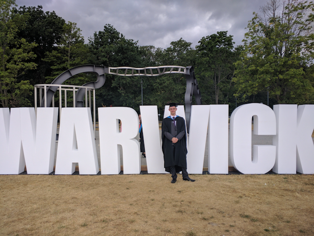
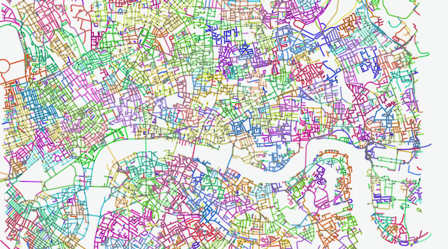

I'm a research assistant at University of Warwick and a visiting researcher at the Alan Turing Institute.
My research focuses on graph and optimisation algorithms for NP-hard problems with applications to air pollution.
I am part of the Clean Air in London project which aims to develop machine learning algorithms to understand and predict air quality in London. The algorithms I develop take these pollution models and find trajectories which minimise the pollution of exposure of a person following the trajectory.